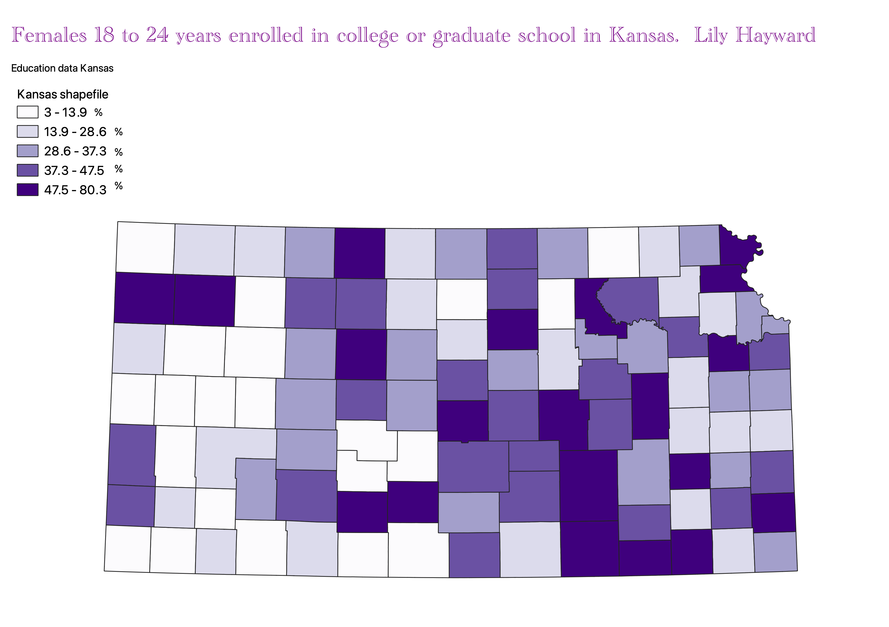
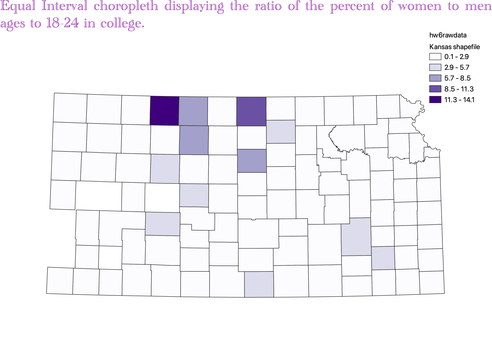
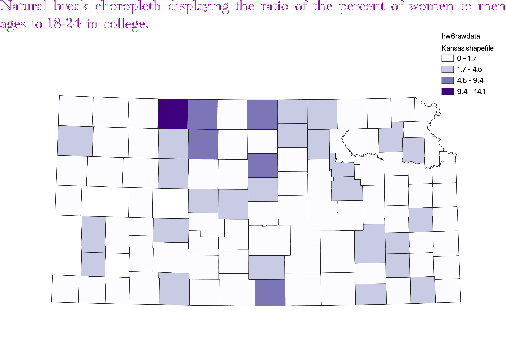
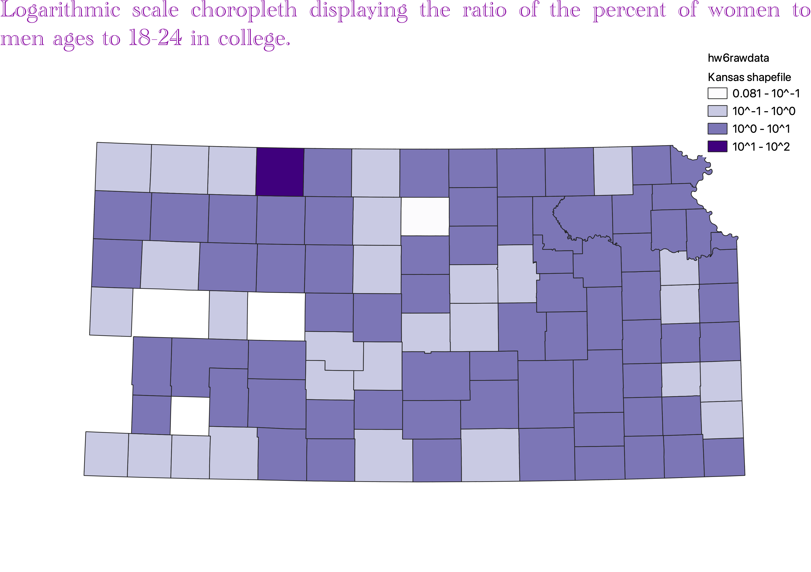

Homework 6: Census data choropleth
Lily Hayward
This map displays the percent of girls from the age of 18 to 24 that are enrolled in universities in different Kansas counties. The darker shades of purple are meant to represent the counties with a higher enrollment population.

Data used for this project
CSV dataset
Link to shapefile
Homework 6 Part 2

For this classification a clear positive is the fact that it has legend is easy to create and also it is easy for people to interpret the ledgend. A downfall to this data is that often the data will fall into a couple of classes meanign that the map will make the data look as though its all in the same catagory when the catagories are just too broad and contain too many variables.

The natural break classification of data uses an algorithm to group data that is seperated. it is good to apply to datasets that have an uneven distribution but that arent skewed towards either end. It can create classes that have large varriance in the numbers. It is also difficult to compare two maps that both have this classification as the classes are very specific to each dataset rather than something that is specific to this classification style

Log scales are good for showing variations visual in a way that would not be shown in equal interval classifications its also very good for highley skewed data. An issue with this is that most people with no statistical experience can read the scale of the map. This is a rather major con because if people cannot decipher the map then they wont be able to interpret the data.